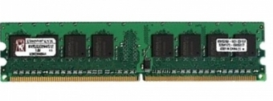
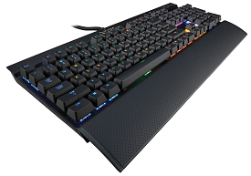
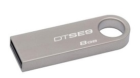

Апаратне забезпечення
Апара́тне забезпе́чення або залі́зо (англ. hardware) — комплекс технічних засобів, який включає електронний пристрій і, зокрема, ЕОМ: зовнішні пристрої, термінали, абонентські пункти тощо, які необхідні для функціонування тієї чи іншої системи; фізична частина ЕОМ..
Перефирійні пристрої
Перифері́йний при́стрій — частина технічного забезпечення, конструктивно відокремлена від головного блоку обчислювальної системи. Периферійні пристрої мають власне керування і функціонують за командами центрального процесора. Периферійні пристрої призначені для зовнішньої обробки даних, що забезпечує їх підготовку, введення, зберігання, керування, захист, вивід та передачу по каналах зв'язку.
Портативні пристрої
флешки, роутери, блоки живлення, адаптори та інше.